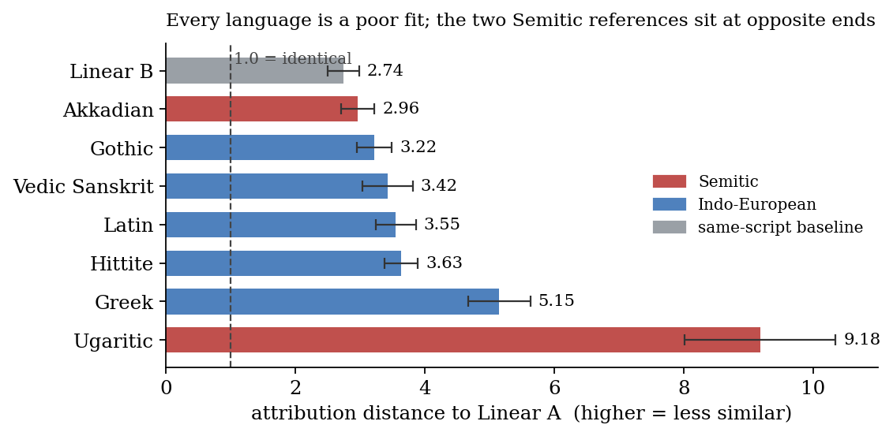
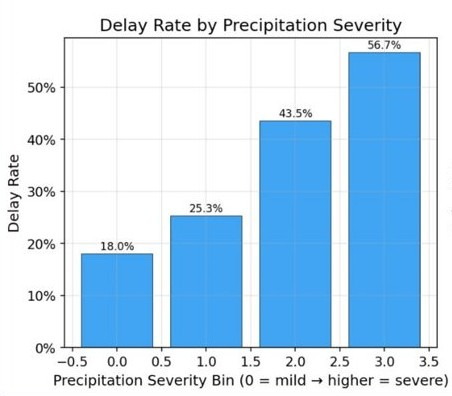

About
I graduated from UC Berkeley's Master of Information and Data Science (MIDS) program, and I love to build things. The problems I enjoy most are the ones where the hard part isn't the model but knowing when to trust it. My projects are working systems built on real, messy data (public filings, health records, legislation), with the uncertainty left visible rather than smoothed over.
Projects

Personal project · live
Deal Radar
Reads every company that has just filed with the SEC to raise money, remembers what you've seen, and judges the new ones against an investment thesis.
Read more →
MIDS capstone · team of five
Trial by FHIR
Screens patients against a clinical trial's eligibility criteria with an AI decision agent. I designed the agent system and led its evaluation.
Read more →
Independent research
Linear A
Why computer studies of an undeciphered Minoan script keep finding false language families, and the safeguards that show the honest answer: we can't tell yet.
Read more →
MIDS course project · team of five
MayD(el)ay
Predicts which US flights will leave late, an hour ahead, from 31.7 million flights and the weather. I kept the data free of leakage and built the pipeline that fed every model.
Read more →